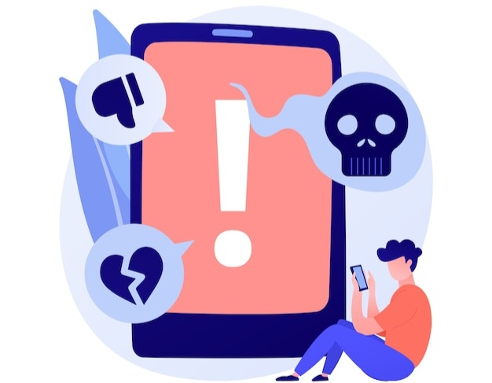

¿QUE ES EL CIBERACOSO?
El ciberacoso o acoso cibernético también denominado acoso virtual, es el uso de medios digitales para acosar a una o varias personas mediante ataques personales, divulgación de información personal o falsa entre otros medios. Los actos de ciberagresión poseen unas características concretas que son el anonimato del agresor, su velocidad y su alcance.
El ciberacoso puede causar daños psicológicos muy graves y, de igual manera, de esto va a depender la reprensión legal que tendrá el acosador.
TIPOS DE ACOSOS
El ciberacoso puede englobar varios tipos de acosos conocidos como : Acoso Psicológico, Acecho o Acoso Físico, Grooming, Acoso Laboral, Acoso Sexual y Acoso Inmobiliario.
Debido al alcance, difusión, y masificación del uso de Internet, se puede dar ciberacoso prácticamente en todos los ámbitos en los que se mueve una persona relativamente joven hoy en día: Académico, Profesional y Social.
Las víctimas de 'ciberacoso', como las de acoso en la vida real, sufren problemas de estrés, humillación, ansiedad, depresión, ira, impotencia, fatiga, enfermedad física, pérdida de confianza en sí mismo, pudiendo derivar al posible suicidio.
CARACTERÍSTICAS DEL CIBERACOSO
- Falsa acusación: La mayoría de los acosadores intentan dañar la reputación de la víctima manipulando a gente contra él.
- Publicación de información falsa sobre las víctimas en sitios web. El acoso durante meses o años. Y aunque se elimine la web, "todo lo que se publica en Internet se queda en la red".
- Recopilación de información sobre la víctima: Los ciberacosadores pueden espiar a los amigos de la víctima, su familia y compañeros de trabajo para obtener información personal.
- Falsa victimización. El ciberacosador puede alegar que la víctima le está acosando a él.
- Es un modo de acoso encubierto.
- Repetición: es esencial para definir el acoso cibernético, ya que es un ataque aislado, no se considera acoso. Además, el desamparo legal permite que, aunque se cierre un sitio web con contenido dañino, otro puede abrirse rápidamente, perpetuando el problema.
- No requiere proximidad física entre acosador y víctima. El ciberacoso es un tipo de acoso psicológico que puede ocurrir en cualquier lugar y momento, sin necesidad de que ambos coincidan en el espacio o el tiempo.
La omnipresencia y difusión instantánea de internet provoca que el ciberacoso pueda llegar a ser tan o más dañino que el acoso físico.
El ciberacoso, al ser una forma de acoso indirecto, impide que el agresor vea el dolor de la víctima, lo que dificulta su empatía. Esto le permite obtener satisfacción del acto violento sin experimentar el impacto real en la otra persona.

MOTIVOS DEL CIBERACOSO
Los motivos por los cuales se efectúa el ciberacoso pueden incluir:
- Anónimos: La facilidad de ocultar la identidad permite a los acosadores actuar sin temor a repercusiones.
- Poder y control: Algunos buscan dominar o manipular a otros para sentirse superiores.
- Venganza: Puede ser una forma de represalia por un agravio percibido.
- Celos: Rivalidades o envidias pueden llevar a ataques en línea.
- Miedo o inseguridad: Los acosadores a menudo proyectan sus propias inseguridades al atacar a otros.
- Entretenimiento: Algunos lo ven como un juego o una forma de diversión a expensas de la víctima.
- Normalización del comportamiento: En ciertos grupos, el acoso en línea puede ser aceptado o incluso alentado.
Las experiencias previas pueden convertir a una persona en acosador, y factores como celos en el entorno escolar o rivalidades laborales pueden desencadenar ataques.
El entorno social también es relevante, ya que en algunas comunidades en línea se normaliza el acoso como entretenimiento.
Además, la percepción del acoso varía según factores culturales, complicando su erradicación. Estas dinámicas hacen que cada caso de ciberacoso sea complejo y dependiente del contexto.